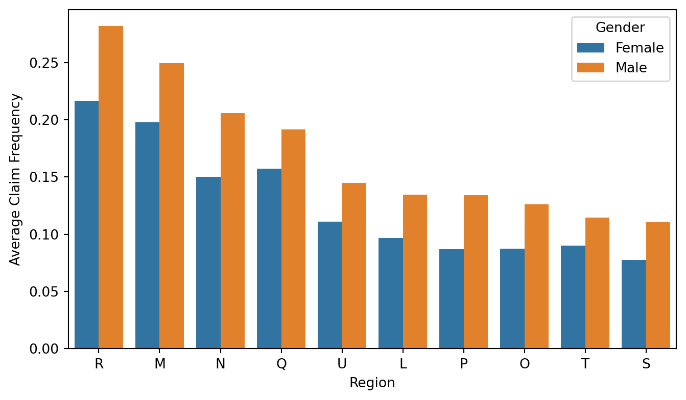
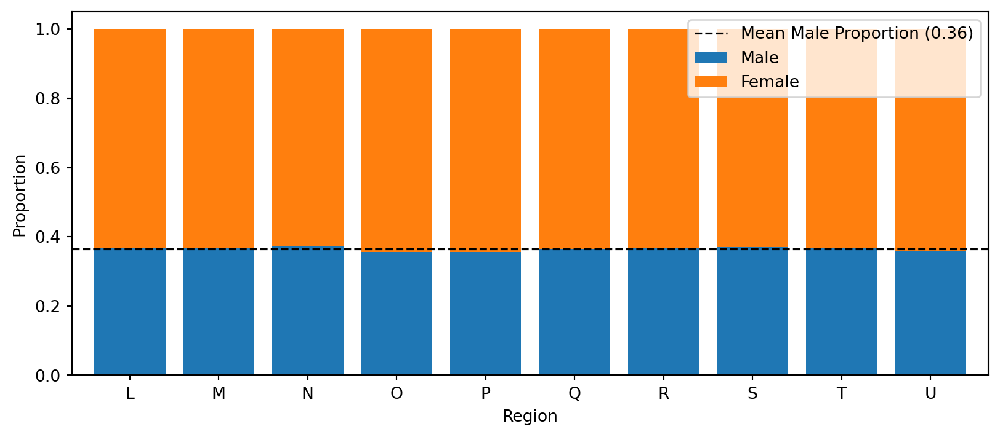
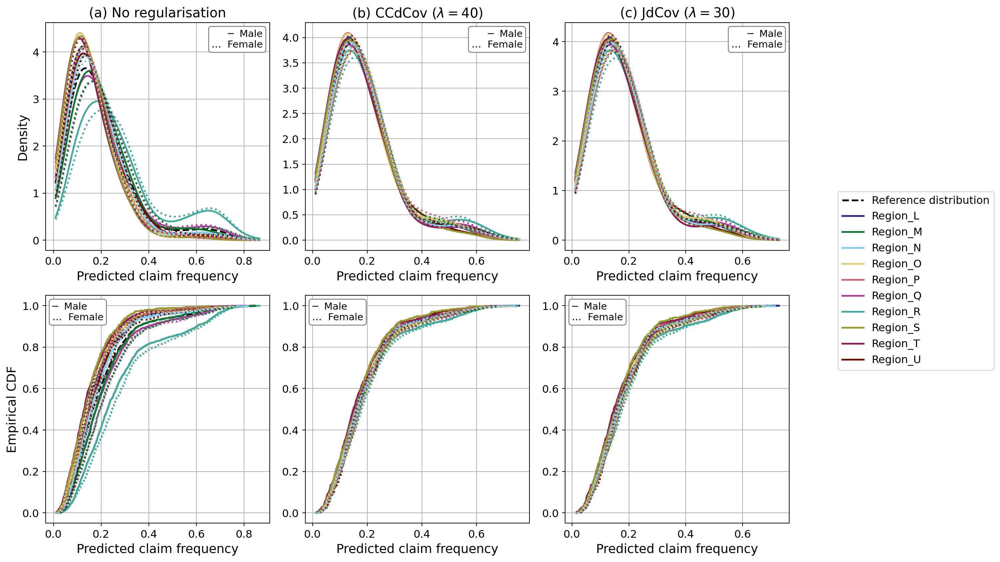

# Utility libraries
import pandas as pd
import numpy as np
import pyreadr
import seaborn as sns
import matplotlib.pyplot as plt
from multiprocessing import Pool
import pickle
import copy
from copy import deepcopy
import random
from pathlib import Path
from collections import defaultdict
import torch, math, multiprocessing as mp
from functools import partial
# torch related libraries for neural network architecture
import torch
import torch.nn as nn
import torch.nn.functional as F
import torch_optimizer as optimz
from torch.utils.data import DataLoader, TensorDataset, random_split
# sklearn libraries for data preprocessing and machine learning related functions
from sklearn.model_selection import StratifiedKFold, train_test_split, ParameterGrid
from sklearn.metrics import mean_poisson_deviance, make_scorer, log_loss
from sklearn.preprocessing import MinMaxScaler, OneHotEncoder, LabelEncoder
from sklearn.compose import ColumnTransformer
from sklearn.pipeline import Pipeline
from sklearn.neighbors import KernelDensity
# Package for sklearn with torch
from skorch import NeuralNetRegressor, NeuralNetClassifier
from skorch.callbacks import EarlyStopping
from skorch.helper import predefined_split
from skopt import gp_minimize
from skopt.space import Integer, Real, Categorical
# Scipy libraries for distributions and tests
from scipy.stats import poisson, wilcoxon, chi2_contingency, f_oneway, kruskal
from scipy.stats.distributions import chi2Beyond pairwise correlation: capturing nonlinear and higher-order dependence with distance statistics
# loading utility functions from /general
%run python/general/dcovs.py
%run python/general/dcovs_memeff.py
%run python/general/utils.py
%run python/general/metrics.py
%run python/general/NN.py
%run python/general/tune_pg15_parallel.pyIllustrations using joint distance covariance/correlation
To illustrate the use of joint distance covariance, we make use of the example in Lee et al. (2025). Here we focus on demographic parity for the output of a machine learning algorithm, where we aim for the model output to be independent of the protected features.
Exploratory data analysis
First, we take a look at the data. We use the pg15training dataset available in the CASdatasets package in R, which contains French motor insurance data from 2015. In this dataset, we consider gender and residential region (which can be a proxy for ethnicity, race, etc.) as the protected features.
df_pg15 = pyreadr.read_r('python/data/pg15training.rda')
df_pg15 = df_pg15['pg15training']df_process = df_pg15.copy(deep=True)
df_process = df_process\
.rename(columns={'Gender': 'Female', 'Group2': 'Region',
'Poldur': 'Duration','Numtppd': 'nclaims',
'Type': 'CarType', 'Category': 'CarCat',
'Group1': 'CarGroup'})
df_process = df_process.iloc[21:] # removing duplicate observations
df_process.reset_index(inplace = True)
df_process = df_process.drop('rownames', axis=1) # Removing index column
df_process = df_process.drop(['Numtpbi', 'Indtppd', 'Indtpbi', 'PolNum',
'CalYear', 'SubGroup2', 'Adind'], axis = 1)
# Compute claim frequency
df_process['claim_freq'] = df_process['nclaims'] / (df_process['Exppdays'] / 365)
# Map 'Female' column to binary (0 = Male, 1 = Female) if it's stored as string
df_process['Female'] = df_process['Female'].map({'Male': 0, 'Female': 1})Here we can see that the average claim frequency are different across different regions. This differences can possibly be reflected in the model output such that policyholder in region R may be predicted with a higher claim frequency.
# Sort region order by male average claim frequency (Female == 0)
male_avg = (
df_process[df_process['Female'] == 0]
.groupby('Region', observed=True)['claim_freq']
.mean()
.sort_values(ascending=False)
)
region_order = male_avg.index.tolist()
# Re-map back for legend clarity
df_process['Female'] = df_process['Female'].map({0: 'Male', 1: 'Female'})
# Plot
plt.figure(figsize=(8, 4.5))
sns.barplot(
data=df_process,
x='Region',
y='claim_freq',
hue='Female',
order=region_order,
errorbar=None
)
plt.xlabel("Region")
plt.ylabel("Average Claim Frequency")
plt.legend(title="Gender")
Then we also look at the association between the two protected features. Here, we examine the proportion of each gender within each region, and the proportions appear similar across regions, suggesting little (or no) association between gender and region.
counts = pd.crosstab(
df_process['Region'], # rows
df_process['Female'], # columns: 0 = Male, 1 = Female
)
# Row-wise proportions for the stacked bar
props = counts.div(counts.sum(axis=1), axis=0) # normalise by row
props.columns = ['Male', 'Female'] # nicer labels
# ────────────────────────────────────────────────
# 3. Plot
# ────────────────────────────────────────────────
ax = props.plot(kind='bar', stacked=True,
figsize=(10, 4), width=.8)
ax.set_xlabel("Region")
ax.set_ylabel("Proportion")
ax.legend(title="Gender", fontsize=9)
ax.tick_params(axis='x', rotation=0)
# horizontal line at the overall mean male proportion
mean_male = props['Male'].mean()
ax.axhline(mean_male, ls='--', c='black', lw=1.2,
label=f"Mean Male Proportion ({mean_male:.2f})")
ax.legend()
One can also apply permutation tests to check whether the protected features are independent. We do not run this here because the dataset is large and the permutation test can take a long time to compute.
# Run permutation test using distance covariance. Note that the variables need to be
# encoded into tensors before running the test.
permtest_indep_jdcov_mem(Z1_train_tensor, Z2_train_tensor, n_bootstrap = 1000)# Here we split the data into training data and testing data
df_process = df_process.drop(['claim_freq'], axis=1)
df_process['strat_key'] = df_process['nclaims'].astype(str) + '_' + df_process['Female'].astype(str) + '_' + df_process['Region'].astype(str)
np.random.seed(1220)
train_data, test_data = stratified_split_with_tolerance(df_process, 'strat_key', tolerance=0.0, test_size=0.2)# this code chunk is used to create tensors for training the model
train_data['Exppdays'] = (train_data['Exppdays']/365)
train_data = train_data.rename(columns = {'Exppdays': 'Exposure'})
test_data['Exppdays'] = (test_data['Exppdays']/365)
test_data = test_data.rename(columns = {'Exppdays': 'Exposure'})
X_train = train_data
X_test = test_data
y_train = train_data['nclaims']
y_test = test_data['nclaims']
offset_train = train_data['Exposure']
offset_test = test_data['Exposure']
X_train['Female'] = pd.get_dummies(X_train["Female"])['Female'].astype(int)
X_test['Female'] = pd.get_dummies(X_test["Female"])['Female'].astype(int)
X_train['CarCat'] = X_train['CarCat']\
.cat.rename_categories({'Small':0, 'Medium':1, 'Large':2})
X_test['CarCat'] = X_test['CarCat']\
.cat.rename_categories({'Small':0, 'Medium':1, 'Large':2})
# Column names for different preprocessor
scale_col = ['Age', 'Bonus', 'Duration', 'Value', 'Density']
onehot_col = ['Region', 'CarType', 'Occupation','CarGroup']
# Setting up preprocessor for preprocessing the data
preprocessor = ColumnTransformer(
transformers=[
('num', MinMaxScaler(feature_range=(0, 1)), scale_col),
('cat_onehot', OneHotEncoder(sparse_output=False), onehot_col)
],
remainder='passthrough' # Passthrough any columns not specified for transformation (e.g., already processed)
)
X_train = preprocessor.fit_transform(X_train, y_train)
X_test = preprocessor.transform(X_test)
processed_columns = scale_col + \
list(preprocessor.named_transformers_['cat_onehot'].get_feature_names_out()) \
+ ['Female'] + ['CarCat'] + ['Exposure'] + ['nclaims'] + ['strat_key']
X_train = pd.DataFrame(X_train, columns=processed_columns)
X_test = pd.DataFrame(X_test, columns=processed_columns)
# Reconstructing the transformed data into pandas dataset.
np.random.seed(1220)
subtrain_data, valid_data = stratified_split_with_tolerance(X_train, 'strat_key', tolerance=0.05, test_size=0.3)
X_subtrain = subtrain_data.drop(['Exposure', 'nclaims','strat_key'], axis = 1)
X_valid = valid_data.drop(['Exposure', 'nclaims','strat_key'], axis = 1)
y_subtrain = subtrain_data['nclaims']
y_valid = valid_data['nclaims']
offset_subtrain = subtrain_data['Exposure']
offset_valid = valid_data['Exposure']
strat_key = X_train['strat_key']
X_train = X_train.drop(['Exposure', 'nclaims','strat_key'], axis = 1)
X_test = X_test.drop(['Exposure', 'nclaims','strat_key'], axis = 1)
Z1_train = X_train[['Region_L','Region_M', 'Region_N', 'Region_O', 'Region_P',
'Region_Q', 'Region_R', 'Region_S', 'Region_T', 'Region_U']]
Z1_subtrain = X_subtrain[['Region_L','Region_M', 'Region_N', 'Region_O', 'Region_P',
'Region_Q', 'Region_R', 'Region_S', 'Region_T', 'Region_U']]
Z1_valid = X_valid[['Region_L','Region_M', 'Region_N', 'Region_O', 'Region_P',
'Region_Q', 'Region_R', 'Region_S', 'Region_T', 'Region_U']]
Z1_test = X_test[['Region_L','Region_M', 'Region_N', 'Region_O', 'Region_P',
'Region_Q', 'Region_R', 'Region_S', 'Region_T', 'Region_U']]
Z2_train = X_train['Female']
Z2_subtrain = X_subtrain['Female']
Z2_valid = X_valid['Female']
Z2_test = X_test['Female']
X_train = X_train.drop(['Region_L','Region_M', 'Region_N', 'Region_O', 'Region_P',
'Region_Q', 'Region_R', 'Region_S', 'Region_T', 'Region_U','Female'],axis=1)
X_subtrain = X_subtrain.drop(['Region_L','Region_M', 'Region_N', 'Region_O', 'Region_P',
'Region_Q', 'Region_R', 'Region_S', 'Region_T', 'Region_U','Female'],axis=1)
X_valid = X_valid.drop(['Region_L','Region_M', 'Region_N', 'Region_O', 'Region_P',
'Region_Q', 'Region_R', 'Region_S', 'Region_T', 'Region_U','Female'],axis=1)
X_test = X_test.drop(['Region_L','Region_M', 'Region_N', 'Region_O', 'Region_P',
'Region_Q', 'Region_R', 'Region_S', 'Region_T', 'Region_U','Female'],axis=1)
X_train_tensor = torch.tensor(X_train.values.astype(np.float32))
X_test_tensor = torch.tensor(X_test.values.astype(np.float32))
X_subtrain_tensor = torch.tensor(X_subtrain.values.astype(np.float32))
X_valid_tensor = torch.tensor(X_valid.values.astype(np.float32))
y_train_tensor = torch.tensor(y_train.values.astype(np.float32))
y_test_tensor = torch.tensor(y_test.values.astype(np.float32))
y_subtrain_tensor = torch.tensor(y_subtrain.values.astype(np.float32))
y_valid_tensor = torch.tensor(y_valid.values.astype(np.float32))
offset_train_tensor = torch.tensor(offset_train.values.astype(np.float32))
offset_test_tensor = torch.tensor(offset_test.values.astype(np.float32))
offset_subtrain_tensor = torch.tensor(offset_subtrain.values.astype(np.float32))
offset_valid_tensor = torch.tensor(offset_valid.values.astype(np.float32))
Z1_train_tensor = torch.tensor(Z1_train.values.astype(np.float32))
Z1_test_tensor = torch.tensor(Z1_test.values.astype(np.float32))
Z1_subtrain_tensor = torch.tensor(Z1_subtrain.values.astype(np.float32))
Z1_valid_tensor = torch.tensor(Z1_valid.values.astype(np.float32))
Z2_train_tensor = torch.tensor(Z2_train.values.astype(np.float32))
Z2_test_tensor = torch.tensor(Z2_test.values.astype(np.float32))
Z2_subtrain_tensor = torch.tensor(Z2_subtrain.values.astype(np.float32))
Z2_valid_tensor = torch.tensor(Z2_valid.values.astype(np.float32))Model training
Here we train the model using both CCdCov and JdCov.
# loading current best checkpoints
best_hp_pdev = load_checkpoint("python/checkpoint/best_checkpoint.pt")
best_hp_ccdcov = load_checkpoint("python/checkpoint_ccdcov/best_checkpoint.pt")
best_hp_jdcov = load_checkpoint("python/checkpoint_jdcov/best_checkpoint.pt")set_seed(42)
result_pdev_test = fit_poisson_pg15(X_train_tensor, y_train_tensor,
Z1_train_tensor, Z2_train_tensor, offset_train_tensor,
X_test_tensor, y_test_tensor, offset_test_tensor,
hp = best_hp_pdev, reg_type = "none", lambda_reg = 0)
set_seed(42)
result_ccdcov_test = fit_poisson_pg15(X_train_tensor, y_train_tensor,
Z1_train_tensor, Z2_train_tensor, offset_train_tensor,
X_test_tensor, y_test_tensor, offset_test_tensor,
hp = best_hp_pdev, lambda_reg = 40,
reg_type = "ccdcov")
set_seed(42)
result_jdcov_test = fit_poisson_pg15(X_train_tensor, y_train_tensor,
Z1_train_tensor, Z2_train_tensor, offset_train_tensor,
X_test_tensor, y_test_tensor, offset_test_tensor,
hp = best_hp_pdev, lambda_reg = 30,
reg_type = "jdcov")/Users/homingl/Coding/GitHub/beyond-correlation/.venv/lib/python3.14/site-packages/torch/autograd/graph.py:869: UserWarning: Using backward() with create_graph=True will create a reference cycle between the parameter and its gradient which can cause a memory leak. We recommend using autograd.grad when creating the graph to avoid this. If you have to use this function, make sure to reset the .grad fields of your parameters to None after use to break the cycle and avoid the leak. (Triggered internally at /Users/runner/work/pytorch/pytorch/pytorch/torch/csrc/autograd/engine.cpp:1304.)
return Variable._execution_engine.run_backward( # Calls into the C++ engine to run the backward passModel output
We plot the model predictions by region and gender. As we can see, the predicted claim frequency varies much less than in the unregularised case. Through regularisation, we reduce disparity across subgroups by decreasing the values of the JdCov and CCDCov terms, which adjust the model predictions. In theory, this pushes the predictions to be mutually independent of both region and gender.
plt.rcParams.update({
'font.size': 13,
'axes.titlesize': 15,
'axes.labelsize': 14,
'xtick.labelsize': 12,
'ytick.labelsize': 12,
'legend.fontsize': 12,
'font.family': 'DejaVu Sans',
})
# Region labels & Tol colour-blind palette
region_labels = ['Region_L', 'Region_M', 'Region_N', 'Region_O', 'Region_P',
'Region_Q', 'Region_R', 'Region_S', 'Region_T', 'Region_U']
tol_colors = [
'#332288', '#117733', '#88CCEE', '#DDCC77', '#CC6677',
'#AA4499', '#44AA99', '#999933', '#882255', '#661100'
]
region_colors = dict(zip(region_labels, tol_colors))
df_kde_1 = make_interaction_dfs(result_pdev_test['val_output'],
Z1_test_tensor, Z2_test_tensor)["gender_region"]
df_kde_2 = make_interaction_dfs(result_ccdcov_test['val_output'],
Z1_test_tensor, Z2_test_tensor)["gender_region"]
df_kde_3 = make_interaction_dfs(result_jdcov_test['val_output'],
Z1_test_tensor, Z2_test_tensor)["gender_region"]
df_cdf_1 = build_df(result_pdev_test['val_output'], Z2_test_tensor, Z1_test_tensor)
df_cdf_2 = build_df(result_ccdcov_test['val_output'], Z2_test_tensor, Z1_test_tensor)
df_cdf_3 = build_df(result_jdcov_test['val_output'],Z2_test_tensor, Z1_test_tensor)
kde_dfs = [df_kde_1, df_kde_2, df_kde_3]
cdf_dfs = [df_cdf_1, df_cdf_2, df_cdf_3]
titles = ["(a) No regularisation",
r"(b) CCdCov ($\lambda=40$)",
r"(c) JdCov ($\lambda=30$)"]
# COMBINED FIGURE 2×3
fig, axes = plt.subplots(nrows=2, ncols=3, figsize=(16, 9), sharex='col')
# KDE row
kde_handles, ref_kde = {}, None
for col, (df, title) in enumerate(zip(kde_dfs, titles)):
ax = axes[0, col]
ax.set_title(title)
h, ref = plot_kde_by_region_gender(
ax, df,
interaction_col='Gender_region',
output_col='Output'
)
if ref_kde is None:
ref_kde = ref
kde_handles.update(h)
axes[0,0].set_ylabel("Density")
# CDF row
cdf_handles = {}
for col, df in enumerate(cdf_dfs):
ax = axes[1, col]
h = plot_empirical_cdf(
ax, df,
interaction_col='Gender_region',
output_col='Predicted claim frequency'
)
if col == 0: # first plot gives reference handle
ref_cdf = h['Reference distribution']
cdf_handles.update({k:v for k,v in h.items() if k!='Reference distribution'})
axes[1,0].set_ylabel("Empirical CDF")
# Shared region legend (right of figure)
region_handles = {}
for d in (kde_handles, cdf_handles):
region_handles.update(d)
sorted_regions = sorted(region_handles.keys())
legend_handles = [ref_kde] + [region_handles[r] for r in sorted_regions]
legend_labels = ["Reference distribution"] + sorted_regions
fig.legend(legend_handles, legend_labels,
loc='center left', bbox_to_anchor=(0.88, 0.5), fontsize=12)
# inline Male / Female key + ensure x-ticks on KDE row
for ax in axes[0]: # KDE row
# show x-tick labels that were hidden by sharex
ax.tick_params(axis='x', which='both', labelbottom=True)
# key in upper-right
ax.text(
0.97, 0.97,
'─ Male\n… Female',
transform=ax.transAxes,
ha='right', va='top', fontsize=11,
bbox=dict(facecolor='white', edgecolor='gray',
boxstyle='round,pad=0.3')
)
for ax in axes[1]: # CDF row
# key in upper-left (original position)
ax.text(
0.03, 0.97,
'─ Male\n… Female',
transform=ax.transAxes,
ha='left', va='top', fontsize=11,
bbox=dict(facecolor='white', edgecolor='gray',
boxstyle='round,pad=0.3')
)
plt.tight_layout(rect=[0.06, 0, 0.85, 1])
We also applied a permutation test to the joint distance covariance between the model predictions and the protected features. The test is likely to be significant because the number of predictions is large, making it easier to detect statistically significant association.
permtest_indep_jdcov_mem(result_jdcov_test['val_output'], Z2_test_tensor, Z1_test_tensor, n_bootstrap=500)(tensor(7.8201e-05), np.float32(3.1763317e-05), tensor(0.0040))References
Lee, Ho Ming, Katrien Antonio, Benjamin Avanzi, Lorenzo Marchi, and Rui Zhou. 2025. “Machine Learning with Multitype Protected Attributes: Intersectional Fairness Through Regularisation.” arXiv Preprint arXiv:2509.08163.